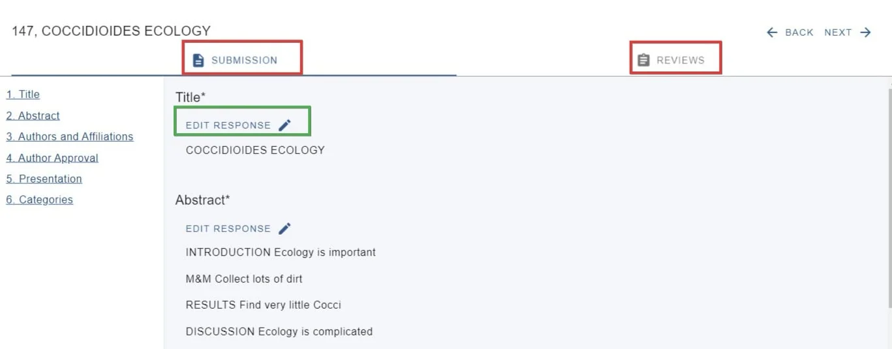
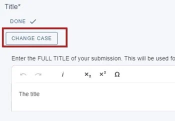
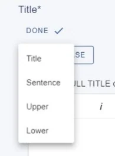
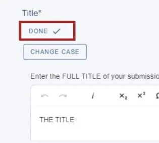

Editing a user's submission
You may find you are required to edit a user's submission. It's a straightforward process and any updates will be recorded in the 'last updated by' column in the submission tables.#
The guidance below is for event administrators/ organisers. If you are an end user (eg. submitter, reviewer, delegate etc), please click here.
Skip to text instructions.
Go to Event dashboard → Abstract Management → Submissions → Table
Click anywhere in the row of the submission that you wish to amend.
You will see two tabs at the top of the screen - Submission, and Reviews. The Submission will display by default in this view. To edit the response of any question, click on Edit Response (green).

There is an option to change the case in the Title field, should you wish.
Clck on Change case...

Then make your choice...

and click Doneto save.


Did this page solve it?
Thanks — this helps us fix it.
Didn't solve it? Ask our support team
No question is too small, and there's no charge for asking. Raise a ticket and someone who knows the software will pick it up.